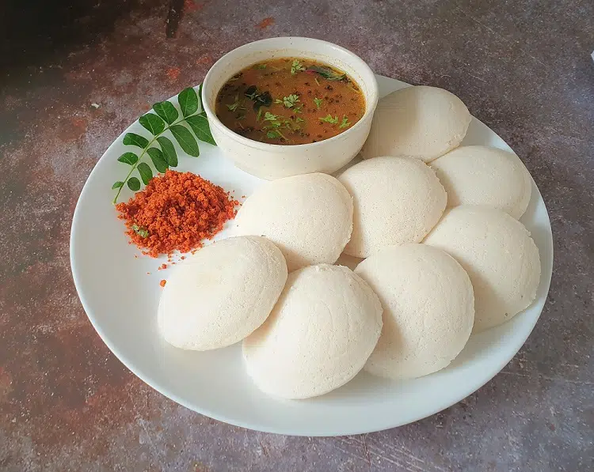

South India's best kept secret: Idli

Idli with Sambhar
A popular South Indian steamed breakfast dish which is made with the combination of semolina and yogurt.
Idli is a soft & fluffy steamed cake made with fermented rice & lentil batter. These are one of the healthiest protein packed Breakfasts from South Indian cuisine. They are easily digestible as the rice & lentils known as DAL are soaked, ground, fermented & then prepared by steaming the batter. These are served with a chutney and or with a tiffin sambar.
Ingredients
- 2 tablespoons vegetable oil
- 1/2 teaspoon mustard seed
- 1/2 teaspoon cumin seeds
- 1 teaspoon split Bengal gram (chana dal)
- 10 fresh curry leaves
- 1 cup semolina (sooji rava)
- 1 teaspoon diced green chile pepper
- 2 tablespoons carrots, chopped
- salt to taste (optional)
- salt to taste (optional)
- 1 tablespoon cashews, crushed
Steps
- Heat vegetable oil in a pan over medium-low heat. Add mustard seeds, cumin seeds, and chana dal and saute for a few seconds. Add curry leaves, dried red chile, cashews, ginger, green chile peppers, and hing and saute until cashew nuts turn slightly brown, 3 to 4 minutes. Add semolina and cook and stir over low heat until slightly browned; remove mixture to a plate and let cool completely, about 10 minutes.
- Add yogurt and carrot to the mixture and mix well. Add water as needed to reach desired consistency. Season with salt to taste. Cover and let sit for 15 minutes. Check batter consistency again; add more water if needed.
- Grease an idli pan and add water to steam; bring to a boil.
- Meanwhile, add fruit salt to the batter, mix well, and then pour the batter in the greased molds.
- Steam the idli for 10 minutes. Remove the idli from the molds and serve.
Odin Recipes